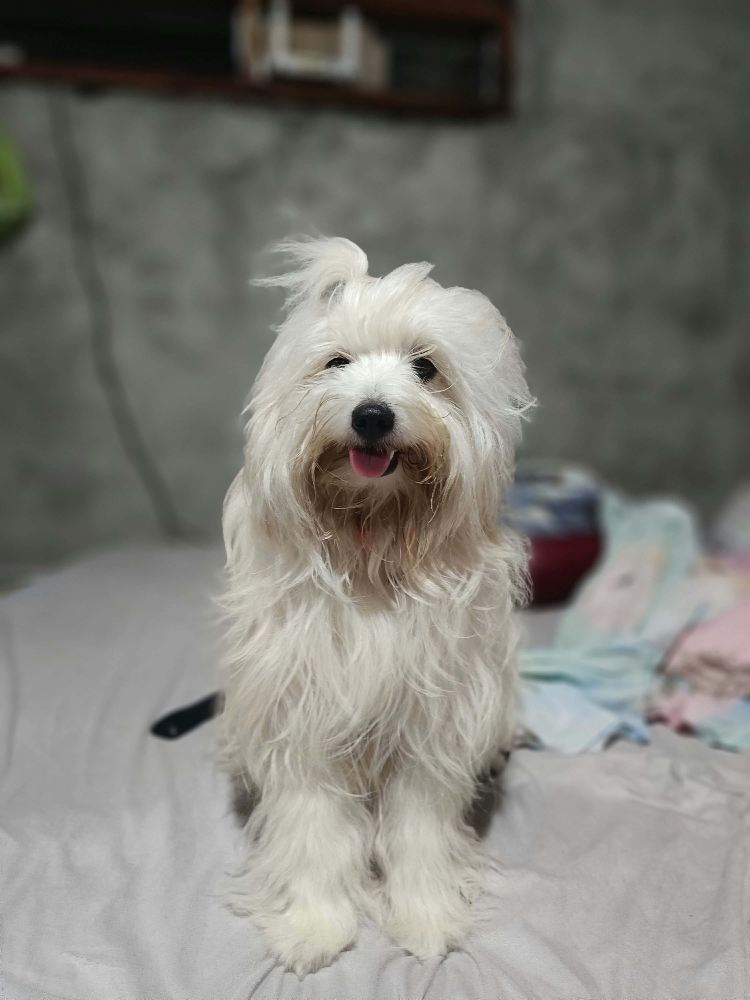

Sultan Kösen is famously known as the tallest living man on Earth. But behind the towering world record is a story of resilience, humility, and a quiet passion for the simple rhythms of life.
Sultan Kösen standing beside a statue of history's tallest man, Robert Wadlow.
BEYOND THE RECORD
Beyond the Title
While the world looks up to his height, Sultan's life is defined by the unique, human dimensions he carries with grace.
Attribute
Measurement
The Human Reality
Official Height
251 cm (8 ft 2.8 in)
Caused by pituitary gigantism; stopped growing after successful surgery in 2010.
Hand Span
28.5 cm (11.22 in)
The largest hands on a living person, measured from wrist to middle finger tip.
Home
Mardin, Türkiye
Grew up in a farming family in southeastern Türkiye.
Passions
Farming & Cooking
Finds peace working with the land and sharing meals with global travelers.
A LIFE BEYOND MEASURE
Living at Scale
Born into a farming family in southeastern Türkiye, Sultan's childhood was ordinary until a pituitary tumor accelerated his growth at age 10. While his height presented profound daily challenges—from finding clothes that fit to requiring custom-built furniture—it also opened a door to the world.
Today, Sultan uses his global recognition not just as a title holder, but as an ambassador of goodwill. He loves traveling to share his culture, breaking down barriers with an infectious smile and a legendary, soft-spoken demeanor.
Designed with respect. Records and measurements are presented as supplied in the original article.
SPECIAL · NO. 03A LOVE THAT STAYS
THE PERSON WHO MAKES HOME FEEL LIKE HOME
Our Mom, Our Everything.
✳THE LOVE THAT MAKES A FAMILY
Our mom is truly special. She loves us like no one else does. She’s always there, always caring, no matter what. She gives so much and asks for almost nothing in return. She’s our safe place, our biggest fan and sometimes our biggest basher too! We really couldn’t ask for anyone better. There’s just no one like her. Personally, if I could live my life all over again, I’d still choose her to be my mom.
A love we would choose in every lifetime.
THE LOVE THAT SHAPES USFLORES J. — 03
SPECIAL · NO. 02WHAT MATTERS TO ME
THE LITTLE THINGS THAT STAY
What makes something special?
✳
What’s special to me are the little things that become meaningful because of the person I share them with. It doesn’t have to be something grand or expensive. Sometimes, having someone who listens to me, understands me even when I can’t explain what I feel, and stays by my side even when I’m not at my best is already enough.
For me, someone or anything becomes special when they can make my day feel lighter just by being there. Because in the end, it’s not really about the things I receive, but how someone makes me feel. And I think that’s what makes a person truly special to me.
THE LITTLE THINGS, SHARED WITH SOMEONE
— OMPALING
SPECIAL · NO. 05A LITTLE COMPANIONSHIP

FIG. 01ONION, AT HOME
THE LITTLE THINGS THAT STAY
My Little Companions
✳
My dogs are special because they became part of my everyday life without me really noticing it. Some of them are still here, like Onion, while others are memories I can only look back on now. It’s usually the little things about them that stay with me—their habits, the things they used to do, and the random moments we had together. They were never just pets that happened to be around the house; they became part of my routine. I think that’s what makes them special to me.
The little lives that became part of mine.
MY LITTLE COMPANIONS05 — FIVE INTERPRETATIONS OF SPECIAL